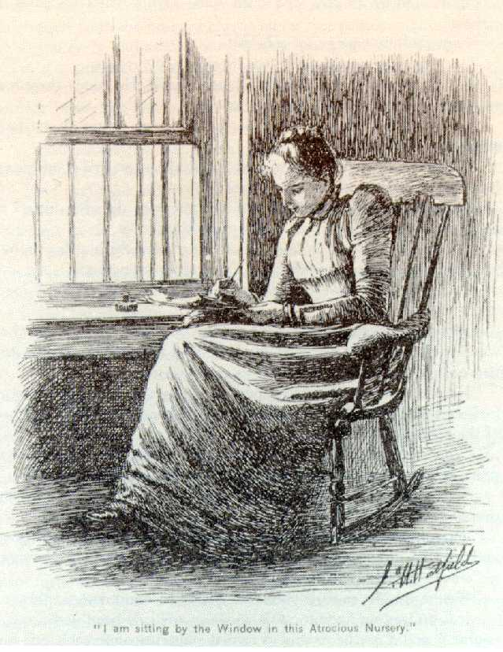
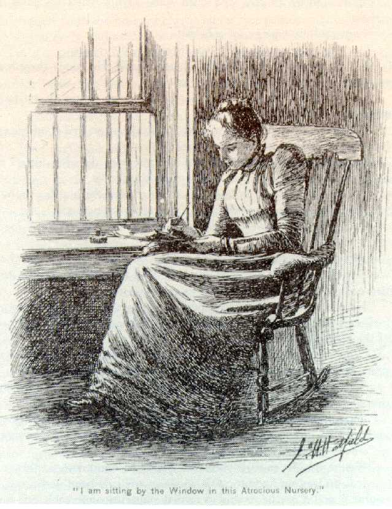

The Yellow Wallaper
Home
Welcome! This website is meant to provide context and additional insights into Charlotte Perkins Gilman's famous story
Welcome! This website is meant to provide context and additional insights into Charlotte Perkins Gilman's famous story
